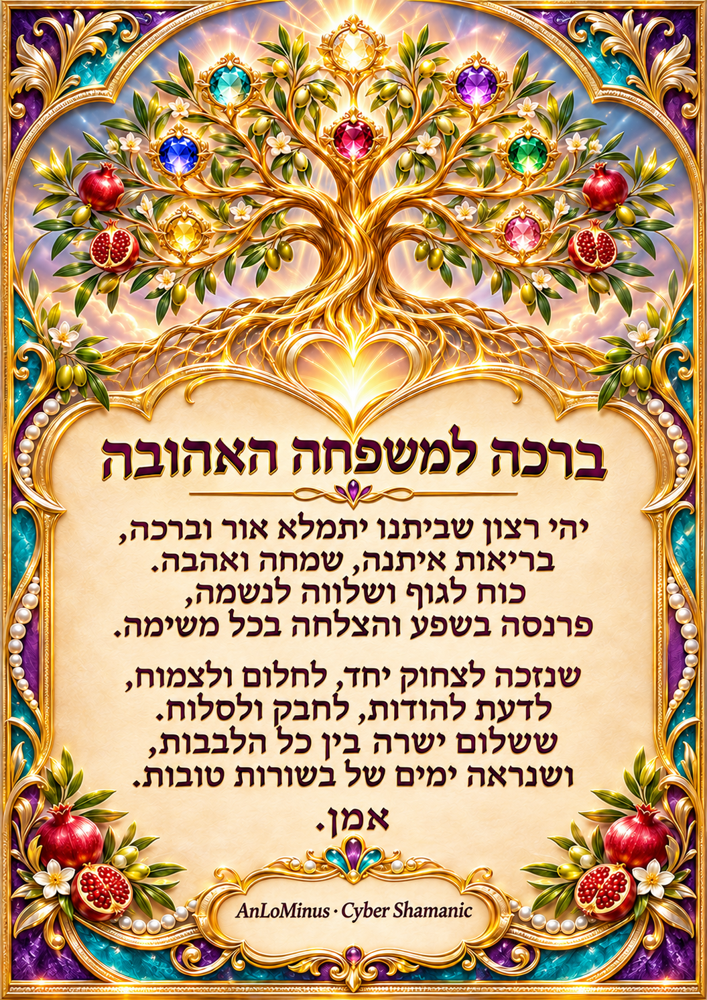

Cyber Shamanic · AnLoMinusמילים שמברכות.
מילים שמברכות.
איורים שמחבקים.
21 קלפי ברכה מקוריים למשפחה — בריאות, אושר, כושר, עושר, אהבה, שלום ושפע. כל קלף הוא יצירה אישית בפני עצמה.

21קלפים מאוירים
10ברכות בנות 12 שורות
100%עברית ומימין לשמאל
21תמונות להורדה
ספריית הברכות
גלריית הקלפים
בחרו קלף כדי להציג, להוריד או לסמן כמועדף.
כל משפחה היא עץ חיים
הברכות נכתבו כדי להזכיר את הטוב שבקשר המשפחתי: מילה שמרפאה, חיבוק שמחזק ונתינה שמחברת דורות.
״הִנֵּה מַה טּוֹב וּמַה נָּעִים שֶׁבֶת אַחִים גַּם יָחַד״ תהילים קל״ג, א׳
יצירה וקרדיטים: לאון יעקובוב (AnLoMinus) · Cyber Shamanic
GitHub · LinkedIn · דוא״ל · WhatsApp